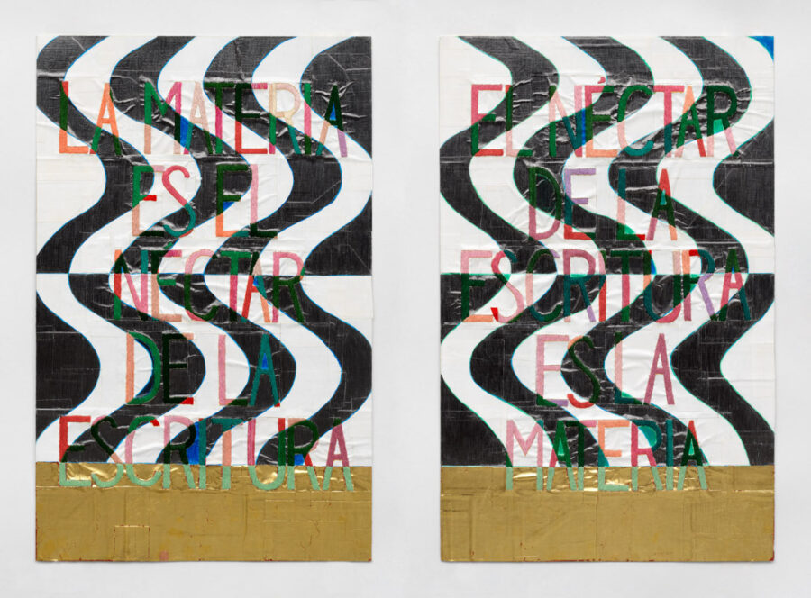

Dianna Frid: Matter Is the Nectar of Writing / La materia es el néctar de la escritura
University Galleries of Illinois State University is pleased to present Dianna Frid: Matter Is the Nectar of Writing / La materia es el néctar de la escritura from January 12 through March 1, 2026.
Featuring new and recent tapestries, artist’s books, embroideries, photographs, mixed-media works, and sculpture, this exhibition is the U.S. premiere of a group of works that Frid created in Mexico and Chicago from 2023 to 2025. In 2025, most of these artworks were exhibited in concurrent exhibitions at two libraries in Oaxaca, Mexico: the Biblioteca Andrés Henestrosa and the Biblioteca Fray Francisco de Burgoa (Burgoa Library). Related works from 2015 through 2025 are also included in the exhibition at University Galleries.
Frid was born in Mexico City and immigrated to Vancouver with her family as a teenager. She has lived in Chicago since 2001. Being from three countries and speaking two languages influences her work in multiple ways. In her words, her work “makes visible the tactile manifestations of language … exploring the relationships between writing and drawing, and the overlaps of transcription, translation, and legibility.” The exhibition title addresses Frid’s ongoing interest in untranslatability between languages and between the linguistic and the non-verbal. In Spanish, materia has two meanings: both subject and matter. And while nectar is a sugary fluid produced by plants to attract pollinators, in Greek mythology, it is the drink of the gods linked to immortality. Throughout her explorations of texts and textiles, Frid combines and re-combines materials—including mica, iron oxide, gold leaf, obsidian, pochote, and cochineal—to address time, transformation, process, pleasure, and geological forces.
The works in this exhibition are inspired by Frid’s longstanding encounter with “worm-holed” premodern and early modern books at the Burgoa Library. Many may see destruction in larvae consuming the matter of pages, chewing on them while living an entire life cycle within a book. Frid instead recognizes—in the transformation of matter—the life force of insects that turns books into dwellings. She also points to the idea of a cosmic wormhole as a hypothesized means of traveling through time and space.
Esta Mina (2015), an artist’s book among the more than 20 artworks in the exhibition, is a piece that Frid created following one of her early visits to the Burgoa Library—a library to which she has often returned since 2014. As a reader turns the canvas-and-foil pages of Esta Mina (which means this mine in Spanish), they unearth nine holes and slowly discover colorful rocks and minerals collected by the artist. These geological objects were formed over long spans of time that surpass the human life cycle. The cavities in the book are cradles for these rocks and refer to the insect-carved tunnels in many of the books in the Burgoa Library’s collection.
Since 2024, Frid has made five weavings in collaboration with the Toño and Lili workshop in Teotitlán del Valle. For the dyeing process, they mainly used the dye extracted from the cochineal bug—a small insect that produces pH-reactive carminic acid. Cochineal can achieve a vast range of red and purple dyes depending on what substances are added to the dyeing mix. Working with cochineal takes time—from the cultivation and harvesting of the insect to the layers and variables that allow for an array of colors to emerge. Dyeing with cochineal is a testament to the devotion of the weavers to maintain and promote this practice. In this group of tapestries, Frid interweaves transcriptions of texts by the poet Vladimir Mayakovsky and the artist Anni Albers that have been translated to Spanish. In new mixed-media works, Frid focuses on paper made with the cotton of the pochote tree, prevalent in the tropics of Mexico. Flakes of mica—a shiny silicate mineral—are mixed with the pochote pulp as the paper is made. To reveal the buried mica shards, Frid carefully excavates them and surrounds them with applied layers of graphite, copper, silver, or gold. This alludes to these elements’ initial formation in volcanic vents or exploding stars. Together, the exhibited works address the transformation of all substances, explore human and cosmic timespans, and emphasize the interconnectedness of all things.
This exhibition is the center point of multiple programs and engagements. Dianna Frid is delivering a public lecture, leading an exhibition tour, and meeting with students, faculty, and staff while on campus. Frid’s talk will be on January 29 at 4:00 p.m. with a reception immediately following. Her artist-led exhibition tour will be on Saturday, February 7 at 1:00 p.m. with a reception immediately following.
Additionally, Frid’s exhibition is a central focus of a Text and Textile seminar in the Wonsook Kim School of Art. A reading group is organized by Melissa Johnson (Professor, Art History and Visual Culture) and Kendra Paitz. University Galleries’ staff is leading art-making workshops for ISU students, K-12 students, and community members, as well as organizing pop-up exhibitions. Sensory-friendly times, independent drawing hours, drop-in writing hours, and scavenger hunts are available. Curator-led tours are available by appointment. Field trip reimbursements for tours and workshops are available for K-12 schools and community organizations. A full list of events is included below.